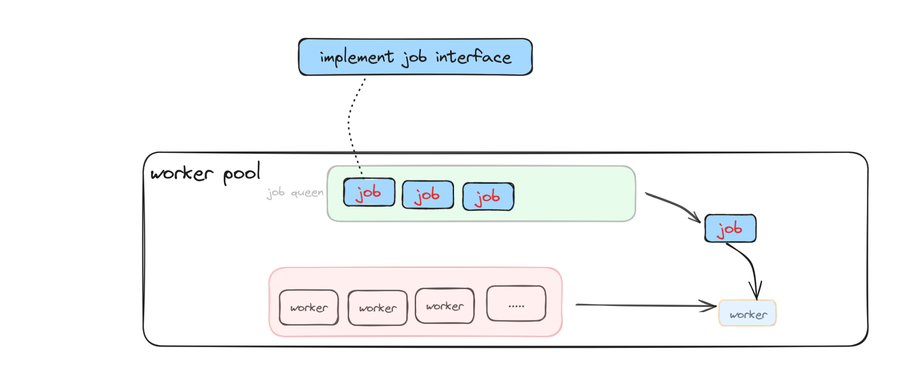

1.线程池介绍
线程池是一种并发编程的技术，它主要用于管理和复用线程，以提高程序的性能和效率。线程池维护了一组工作线程，它们在一个任务队列中获取任务并执行。当任务完成时，线程并不被销毁，而是返回线程池以供下一次使用。
优点：
- 资源管理：线程池能够有效管理系统资源，避免了频繁创建和销毁线程的开销，提高了资源的利用率。
- 性能提升： 通过复用线程，可以减少线程的创建和销毁开销，提高系统的性能。线程的创建和销毁是相对昂贵的操作，而线程池能够在一定程度上避免这些开销。
- 控制并发度： 线程池可以限制并发执行的线程数量，防止系统因过度并发而崩溃，提高系统的稳定性。
- 任务队列： 线程池通常使用任务队列来存储待执行的任务，这样可以实现任务的排队执行，提高系统的整体效率。
缺点：
- 资源占用： 线程池在一些场景下可能会占用较多的系统资源，尤其是在任务队列中积累了大量的任务时，可能会导致内存占用过高。
2.Golang是否需要线程池
Golang中并发模型采用了轻量级的goroutine和通道（channel）机制，相较于传统的线程池模型，更直观、简单且高效。在Golang中，通常不直接使用线程池，而是利用goroutine和channel进行并发编程。本文将通过golang来简单的实现一个线程池.
3.设计
这里使用任务队列加上线程池来完成，当有任务出现的时候，从任务队列中取出任务，然后从线程池中取出一个worker，将每个worker都是一个独立的goroutine，将任务传递给goroutine处理，当任务结束了，再将goroutine放回到线程池中
3.1 job设计
job是要执行的任务，可以通过实现job接口来自定义任务
type Job interface {
RunTask(request interface{})
}
type JobChan chan Job
3.2 worker 设计
Worker就是高并发里面的一个线程，启动的时候是一个Goroutine。Worker结构一需要一个JobChan，用来接收从全局JobQueue里面获取的Job对象。需要一个Start函数，将自己注册到WorkerPool，然后监听Job，有Job传入时，处理Job的Run，处理完成之后，重新将自己添加回WorkerPool。
type Worker struct {
ID int
JobQueue JobChan
WorkerPool chan *Worker
}
func NewWorker(id int, workerpool chan *Worker) *Worker {
return &Worker{
ID: id,
JobQueue: make(JobChan),
WorkerPool: workerpool,
}
}
func (w *Worker) Start() {
go func() {
for {
w.WorkerPool <- w
select {
case job := <-w.JobQueue:
log.Printf("Worker %d processing job\n", w.ID)
job.Run(nil)
}
}
}()
}
3.3 pool设计
workerpool 是一个线程池，用来存储空闲的goroutine(worker)，size也就是pool中goroutine的数量，JobQueue用来存储全局的 jobChan，当有任务到jobQueue时，从pool中取出一个worker，执行完成后将worker放回。waitGroup用于等待所有任务完成，Mutex是一个互斥锁，用于保护共享资源。
type WorkerPool struct {
Size int
JobQueue JobChan
WorkerPool chan *Worker
WaitGroup *sync.WaitGroup
Mutex sync.Mutex
}
//NewWorkerPool 是创建 WorkerPool 实例的构造函数，初始化了上述属性，并返回一个指针。
func NewWorkerPool(size int) *WorkerPool {
return &WorkerPool{
Size: size,
JobQueue: make(JobChan),
WorkerPool: make(chan *Worker, size),
WaitGroup: &sync.WaitGroup{},
}
}
func (wp *WorkerPool) StartPool() {
for i := 0; i < wp.Size; i++ {
worker := NewWorker(i, wp.WorkerPool)
go worker.Start()
wp.WaitGroup.Add(1)
}
go func() {
for job := range wp.JobQueue {
worker := <-wp.WorkerPool
go func(j Job, w *Worker) {
defer func() {
wp.WorkerPool <- w
}()
w.JobQueue <- j
}(job, worker)
}
}()
}
StartPool 方法启动了线程池，创建了指定数量的 worker，并启动了一个 goroutine 来监听 JobQueue 中的任务。当有任务到达时，它会从 WorkerPool 中取出一个空闲的 worker，并将任务分配给该 worker 执行。执行完成后，worker 会被放回 WorkerPool。
在 StartPool 方法中，使用了 sync.WaitGroup 来等待所有 worker 完成任务。每创建一个 worker，就对 WaitGroup 进行加一操作。在 worker 完成任务时，通过 defer 语句来确保在函数退出时减一。这样可以确保在所有 worker 完成任务后，主线程不会提前退出。
3.4 调用
type TickerSys struct {
tickerCount int
Mutex *sync.Mutex
}
func NewTickerSys(initialCount int) *TickerSys {
return &TickerSys{
tickerCount: initialCount,
Mutex: &sync.Mutex{},
}
}
func (t *TickerSys) Run(request int) {
t.Mutex.Lock()
defer t.Mutex.Unlock()
t.tickerCount -= request
}
type PurchaseJob struct {
TickerSys *TickerSys
TicketCount int
}
func (p *PurchaseJob) Run() {
p.TickerSys.Run(p.TicketCount)
}
func main() {
wp := NewWorkerPool(10)
wp.StartPool()
tickerSys := NewTickerSys(100)
for i := 0; i < 1000; i++ {
job := &PurchaseJob{
TickerSys: tickerSys,
TicketCount: 1,
}
wp.SubmitJob(job)
if tickerSys.tickerCount == 0 {
fmt.Println("售票结束")
break
}
}
wp.Close()
}